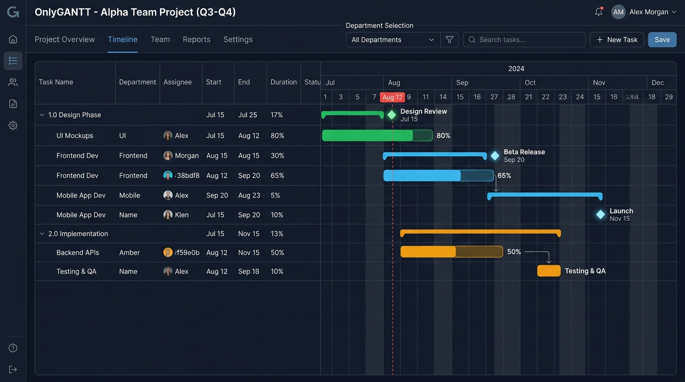
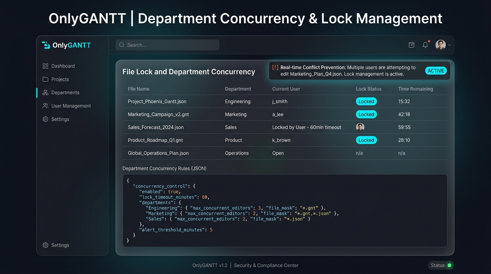
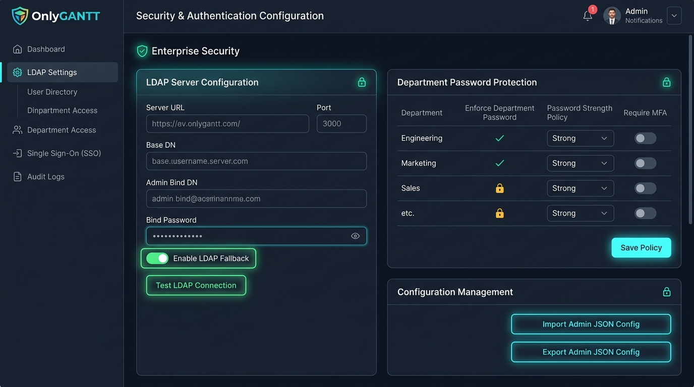
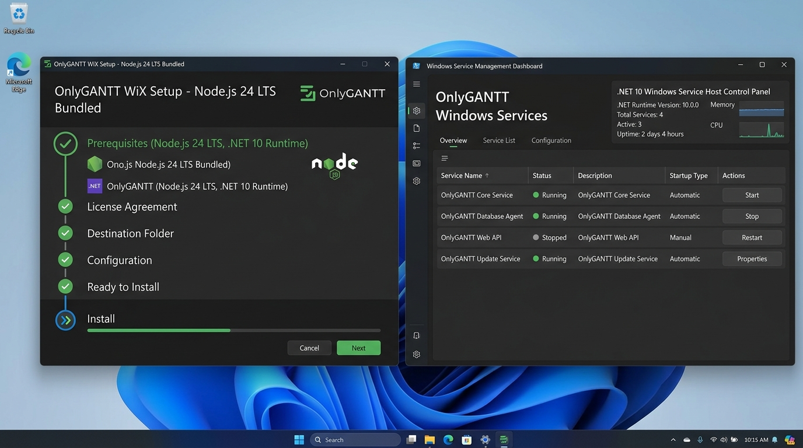

OnlyGANTT offre un’interfaccia web responsive per la pianificazione di progetti per reparto, con blocco multi-utente persisto, supporto festività italiane, auth LDAP facoltativa e Windows Service Host nativo.

Progettato per funzionare in locale o in rete aziendale Windows, con persistenza sicura senza dipendenze cloud terze.
Cronoprogramma con fasi, percentuali, pietre miliari, avvisi di ritardo e calendario completo delle festività italiane.
Gestione dei file `.json` per reparto con lock persistente (`locks.json`), timeout configurabile e prevenzione dei conflitti.
Accesso locale, password di reparto, supporto LDAP facoltativo con fallback locale e reset protetto per l’amministratore.
Servizio Windows autonomo eseguibile in background (`OnlyGantt.Service.exe`) compilato in single-file self-contained.
Importazione ed esportazione immediata di progetti in formato JSON e gestione automatica dei file di backup `.bak`.
Pacchetti MSI ed EXE che includono Node.js 24 LTS x64 come prerequisito per un’installazione completa offline.
Clicca su ciascuna schedula per visualizzare l’anteprima interattiva ed i dettagli operativi.
Pianificazione visiva delle fasi di progetto con zoom dinamico (Giorno, 4-Mesi, Anno), indicatori di stato e milestone.

Controllo della concorrenza sui file JSON dei reparti con stato di blocco in tempo reale e rilascio automatico.

Integrazione con Active Directory/LDAP aziendale o autenticazione locale con password criptata per reparto.

Setup bootstrapper EXE standalone con prerequisito Node.js 24 LTS e servizio Windows nativo per l’avvio automatico.
Scegli la modalità di installazione o l’archivio portabile più adatto al tuo ambiente Windows.
Costruito su tecnologie solide per garantire la massima stabilità in ambienti enterprise.
Web server Express 5 per la gestione delle API e delle risorse.
Host di servizio Windows self-contained compilato native x64.
Interfaccia utente ultra-veloce con bundling ottimizzato.
Bootstrapper offline e MSI installer aziendale.